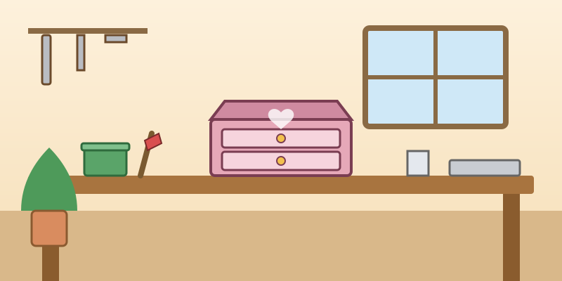
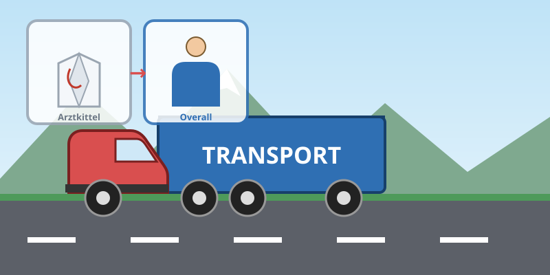

1.1 Lesen Sie die Texte. Richtig oder falsch?Citește cele două texte (Wortschatz-ul te ajută) și decide dacă fiecare afirmație e Richtig (adevărată) sau Falsch (falsă). După verificare vezi explicația cu fragmentul din text.

Nach ihrer Ausbildung zur Industriekauffrau hat Christina Bohnsack 17 Jahre bei einem Elektrokonzern gearbeitet – dann wurde sie plötzlich arbeitslos. Was konnte sie ohne ihre Arbeit tun? Aber dann hatte sie eine Idee: Alte Möbel neu gestalten. Sie hat ein Praktikum in einer Tischlerei gemacht und dann die Firma Siesen.de gegründet.
Jetzt macht sie aus antiken Möbeln liebevolle Schmuckstücke für große und kleine Leute. Die Arbeit in der kleinen Werkstatt gefällt ihr viel besser als die Arbeit im Büro. Hier kann sie kreativ sein. Und wenn ihre kleine Firma nicht genug Geld bringt? „Ich werde jetzt 40 Jahre alt. Zurück in meinen alten Job als Industriekauffrau kann ich immer. Aber dann habe ich wenigstens meinen Traum gelebt. Das kann mir keiner mehr nehmen.“

Markus Studer hat in Zürich Medizin studiert. Am Universitätsspital Zürich und an der University of Alabama at Birmingham (Alabama, USA) hat er seine Ausbildung zum Herzchirurgen gemacht. Später ist er Oberarzt der Herzchirurgie am Universitätsspital Zürich und Leiter eines Herzzentrums geworden.
Nach 25 Jahren als erfolgreicher Herzchirurg hat Dr. Markus Studer den weißen Arztkittel gegen einen blauen Overall getauscht: Er ist Fernfahrer geworden und hat sich einen Traum erfüllt. Er verdient in seinem neuen Beruf wenig, aber er hat seine Entscheidung nie bereut. Er liebt die Freiheit auf der Straße und kommt mit seinem Lastwagen an sehr viele Orte. „Für mich war immer schon klar, dass ich auf dem Höhepunkt meiner Karriere aufhören möchte und etwas anderes mache.“
1.2 Was gehört zusammen?Potrivește începutul fiecărei propoziții (stânga) cu sfârșitul corect: trage bucata în căsuță sau atinge-o, apoi atinge căsuța. După verificare vezi explicația pentru fiecare.
1.3 Hören Sie die Interviews. Worüber sprechen die Personen? Manchmal gibt es mehr Möglichkeiten.Ascultă interviurile și bifează toate variantele corecte pentru fiecare persoană (uneori sunt mai multe). Un punct pentru fiecare persoană cu setul exact corect.
1.4 mit oder ohne? Ergänzen Sie auch den Artikel.Completează cu mit sau ohne și, unde e nevoie, cu articolul. (Pst! Ohne de obicei nu are nevoie de articol.) La itemul 1 scrii doar terminația după «d».
mit (cu) + Dativ: mit dem Fahrrad, mit den Kunden.
ohne (fără) + Akkusativ, de obicei fără articol: ohne Stadtplan, ohne Schule.
1.5 Welche Präposition passt? Kreuzen Sie an.Alege prepoziția potrivită pentru fiecare propoziție. După verificare vezi de ce e corectă și de ce celelalte nu se potrivesc.